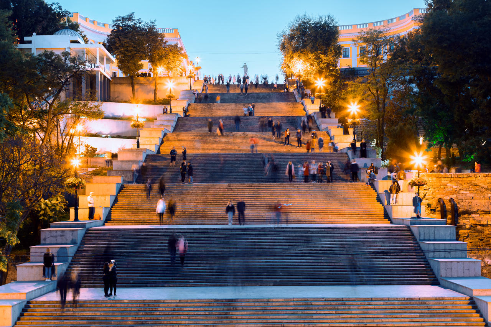

Україна: Країна Історії та Природної спадщини
Україна — найбільша країна у Центрально-Східній Європі, з багатою історією, культурою та неймовірними природними ландшафтами. Від захоплюючих карпатських гір до родючих степів і пляжів Чорного моря, Україна пропонує безліч унікальних місць для відвідування. Кожен регіон має свої особливості та принади. Наприклад, у Львові ви знайдете середньовічну архітектуру та атмосферу європейського міста, а Київ вражає своїми стародавніми церквами та сучасними будівлями.
Загальні відомості про Україну
| Офіційна назва | Україна |
|---|---|
| Столиця | Київ |
| Офіційна мова | Українська |
| Населення | близько 41 мільйон |
| Площа | 603,628 км² |
| Валюта | Гривня (₴) |
Що подивитися в Україні насамперед?
Аккуратний підхід до складання програм екскурсій допоможе зберегти тільки приємні спогади від подорожі до найкрасивішої країни.

Майдан Незалежності
Майдан Незалежності у Києві – головна площа столиці та найпопулярніший майдан країни, де завжди бурхливо кипить життя. Взимку – найбільша новорічна ялинка, влітку – старт велопробігів та світломузичні фонтани, весь рік – періодичні культурно-масові заходи, святкові шоу, концерти зірок. Став символом боротьби за незалежність та демократію під час Помаранчевої революції 2004 року та Революції гідності 2013-2014 років.

Острів Хортиця
Історичний і археологічний заповідник на річці Дніпро в місті Запоріжжі. Унікальне історичне місце, розташоване на річці Дніпро поблизу Запоріжжя. Цей острів відомий своєю великою ролью у формуванні козацької державності та є одним із символів української національної ідентичності.
Печерська Лавра
Це один із найвизначніших пам'ятників культури та релігії України. Розташована у столичному Києві, вона є символом православної віри та національної гордості. Заснована у XI столітті, Лавра стала центром духовного життя і культурного розвитку країни. Вона включає в себе комплекс церков, монастирів, печер, музеїв та інших історичних споруд.

Потьомкінські сходи
Це одна з найвідоміших пам'яток Одеси. Сходи мають 192 ступені, які ведуть від морського узбережжя до центральної частини міста. Вони названі на честь графа Потьомкіна, який відіграв важливу роль у розвитку міста в XVIII столітті. Ці сходи відомі своєю величною архітектурою та вражаючим краєвидом на місто та Чорне море.

Буковель
Найбільший гірськолижний курорт в Україні, розташований у Карпатах. Він відомий своїми великими схилами для лижників та сноубордистів, а також розвинутою інфраструктурою для відпочинку та розваг. Це популярне місце для зимового відпочинку, де можна насолоджуватися красою гірських пейзажів.
Ці місця представляють різні аспекти історії, культури і природних багатств України. Кожен з цих об'єктів відображає багатство та різноманітність України як країни з багатою історією та культурою.
Що можна скоштувати?

Борщ
Символ української кухні. Це ароматний суп на основі буряка, капусти, картоплі, моркви та м'яса (часто свинини або говядини), з додаванням томатної пасти та спецій.

Вареники
Традиційні українські пельмені або вареники, що наповнені начинкою з картоплі, тушкованого м'яса, сиру, вишні або полуниці.
Деруни
Картопляні млинці, які зазвичай подаються з вершками або сметаною.
Україна є країною, яка має багату історію та культуру, що простягається на тисячі років. Вона відома своєю різноманітністю: починаючи від мальовничих Карпат та закінчуючи чарівною Одесою на узбережжі Чорного моря. Україна славиться своєю гостинністю, відкритістю та теплим ставленням до гостей.